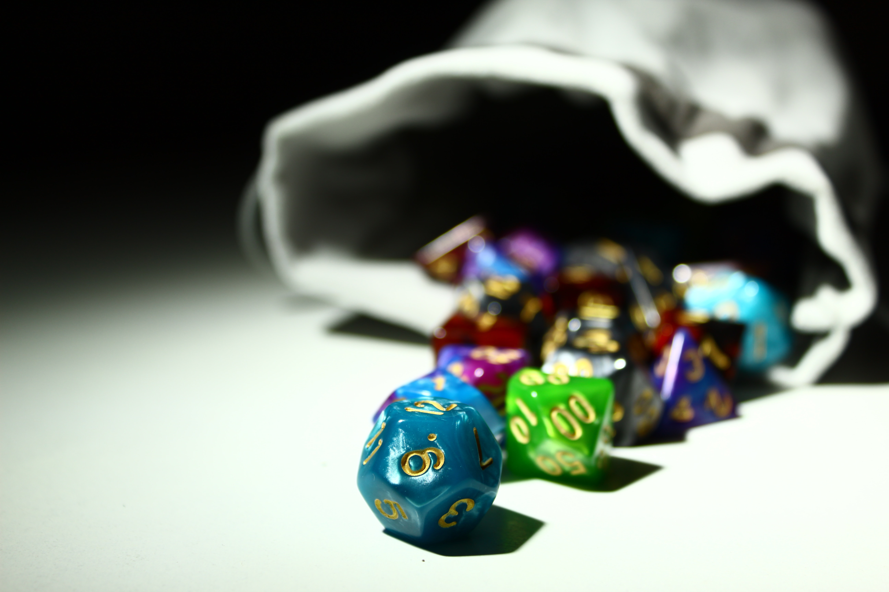

About Me

I am a Christian, and a member of Christ Church NC.
I've lived in North Carolina for all but four years of my life. The other four years (from the ages 2-6) were in Kansas.

My favorite type of food is Italian.

While it's hard to pick a single favorite movie, The Princess Bride is right up there.
I enjoy playing Minecraft, especially modded.

I enjoy tabletop roleplaying games with a group of friends. I was the DM of a Pathfinder campaign that lasted 5 years.